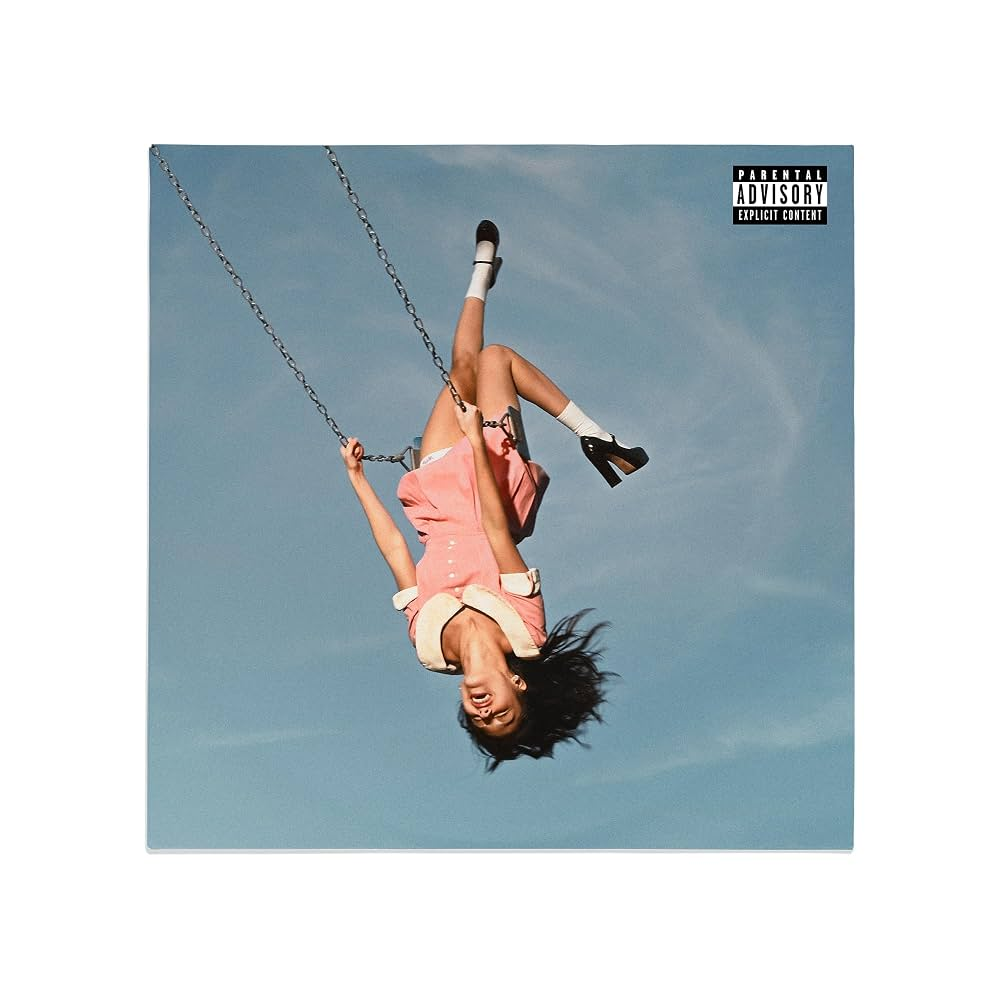
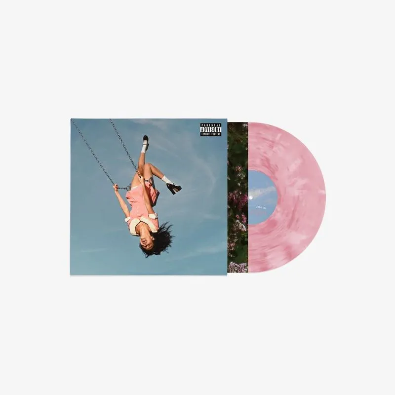
you seem pretty sad for a girl so in love

Artista: Olivia Rodrigo
Gênero: indie pop e pop rock
Indicado a: Álbum do Ano
Melhor Álbum Vocal de Pop
gravação do Ano — the cure
Canção do Ano — the cure
Melhor Performance Solo de Pop — the cure.
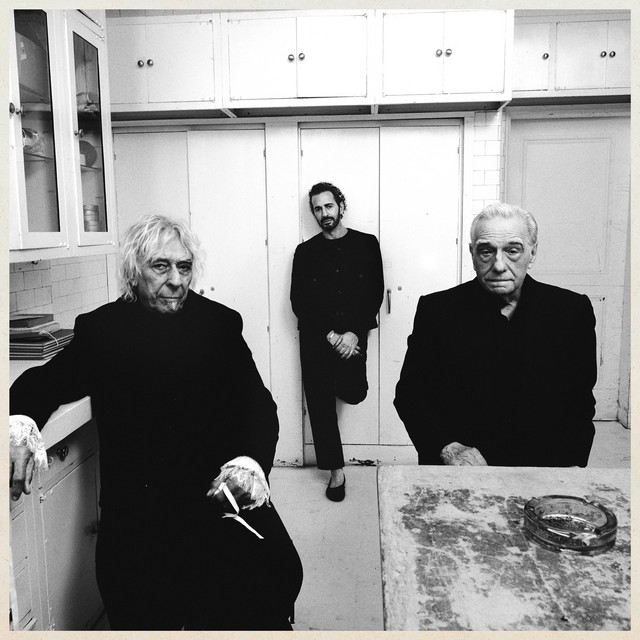
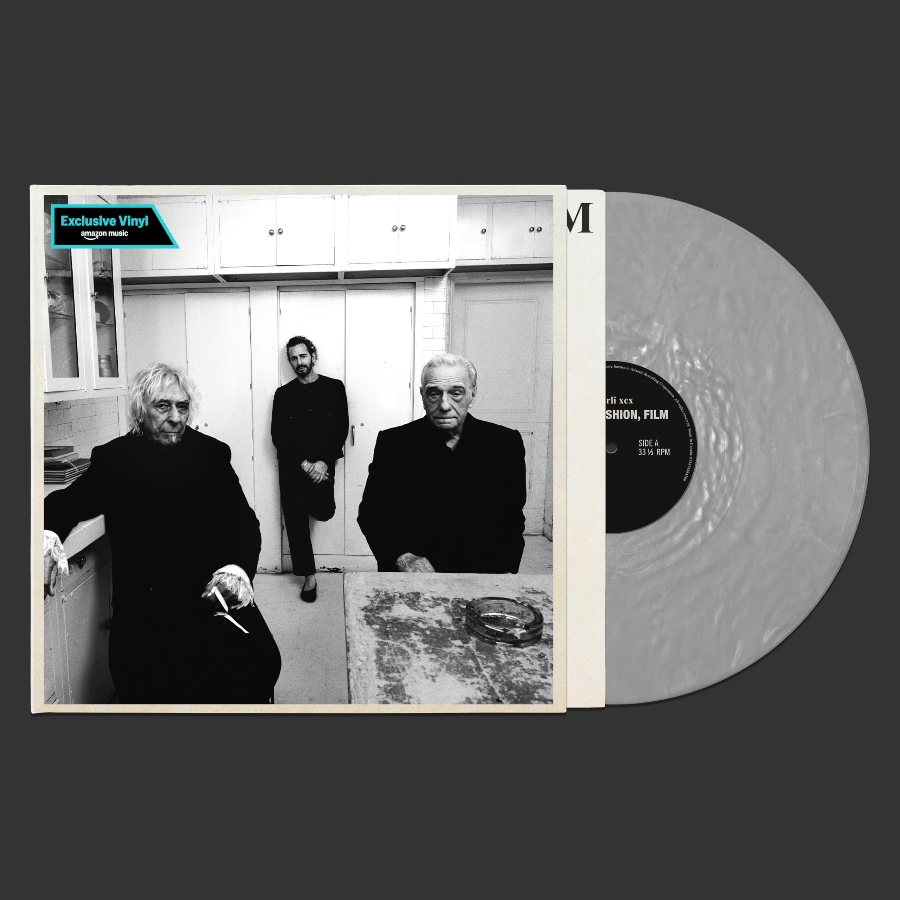
Music, Fashion, Film
Artista: Charli XCX
Gênero: rock eletrônico e pop alternativo
Indicado a: Melhor Álbum de Música Alternativa
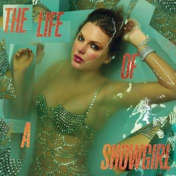
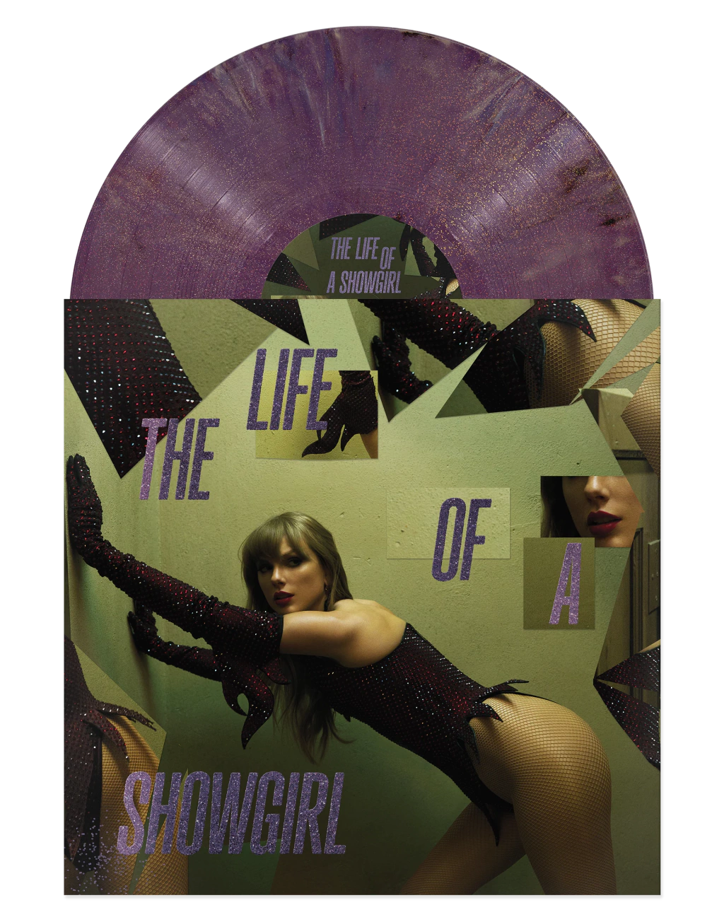
The Life of a Showgirl
Artista: Taylor Swift
Gênero: pop
Indicado a: Álbum do Ano
Melhor Performance de Pop em Duo/Grupo — The Life of a Showgirl, com Sabrina Carpenter.
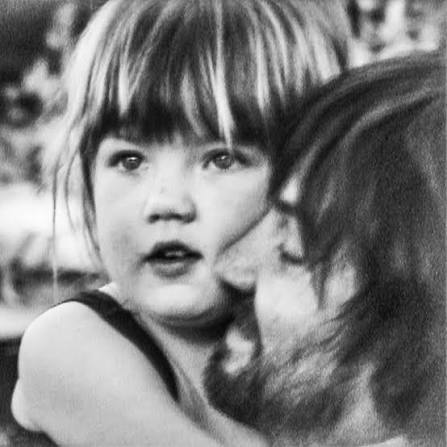
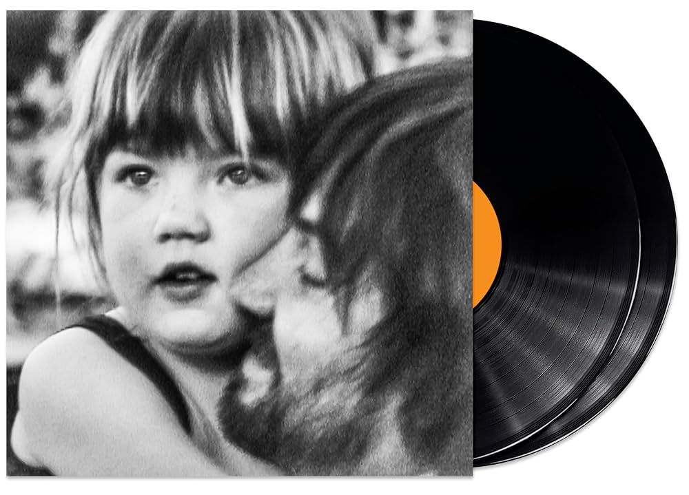
Deadbeat
Artista: Tame Impala
Gênero: Rock psicodélico e indie rock
Indicado a: Melhor Álbum Dance/Eletrônico
Melhor Gravação Dance/Eletrônica — My Old Ways
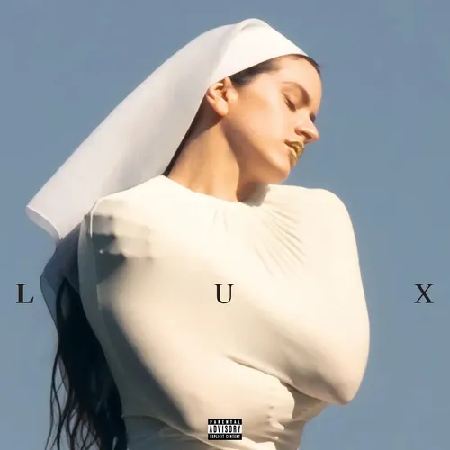
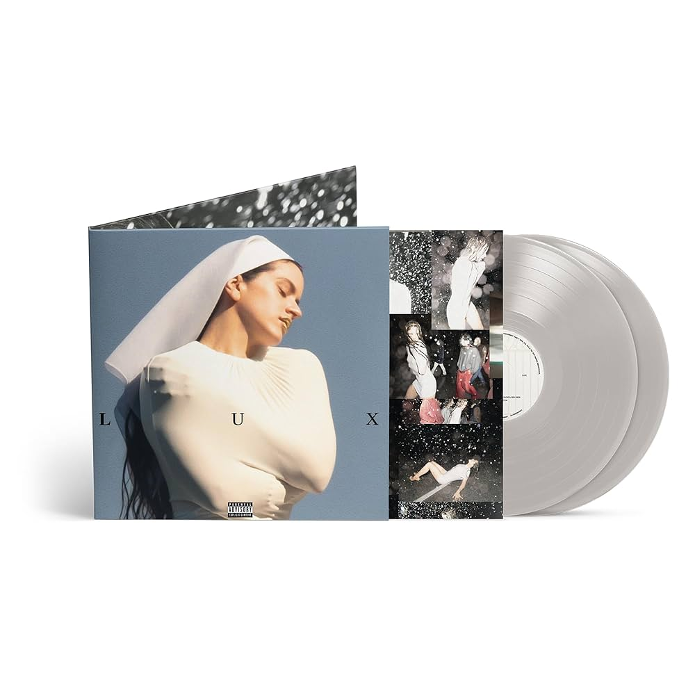
Lux
Artista: Rosalía
Gênero: pop barroco
Indicado a: Álbum do Ano
Melhor Álbum de Música Alternativa
Gravação do Ano — Berghain
Canção do Ano — Berghain
Melhor Performance de Música Alternativa — Reliquia.
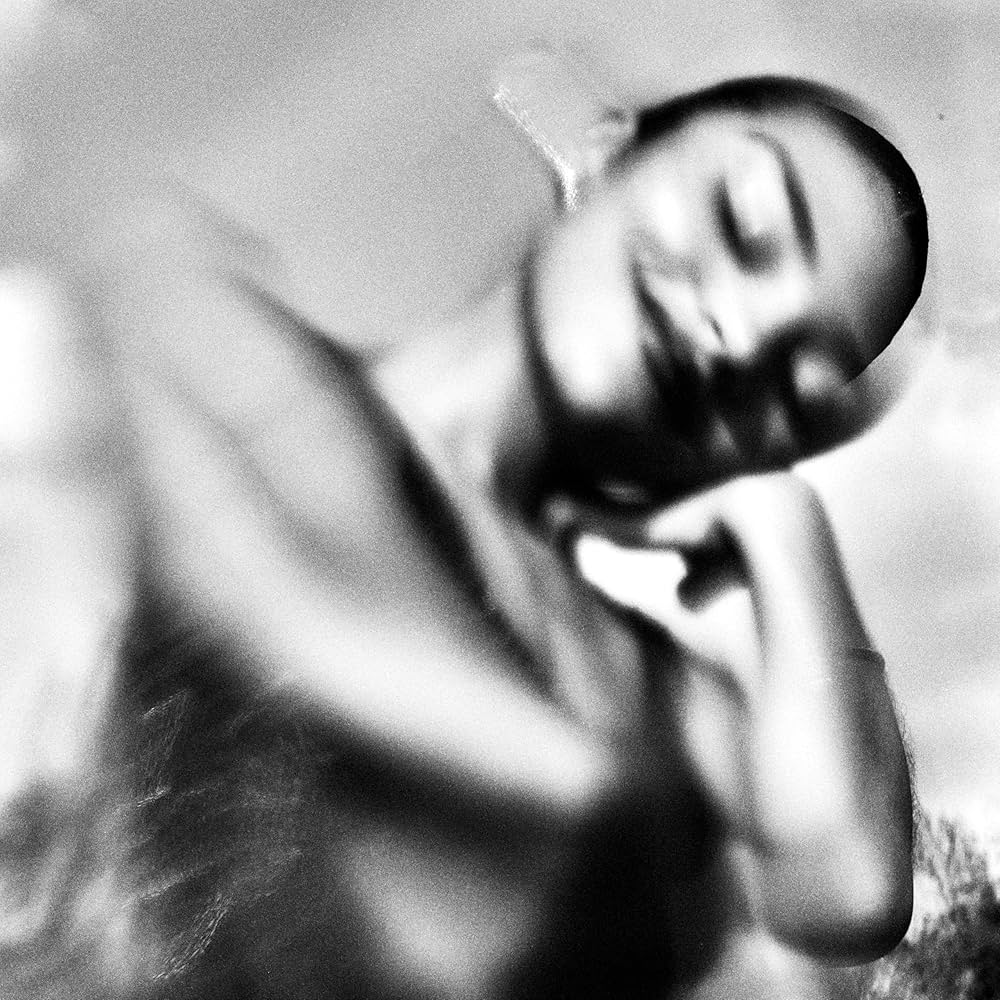
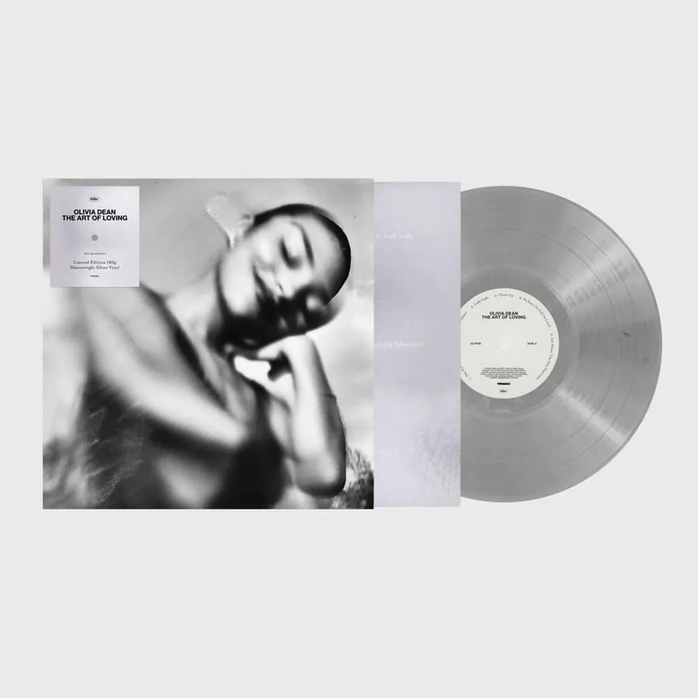
The Art of Starting Over
Artista: Olivia Dean
Gênero: R&B e pop
Indicado a: Álbum do Ano
Melhor Álbum Vocal de Pop
Gravação do Ano — Man I Need
Canção do Ano — Man I Need
Melhor Performance Solo de Pop — Man I Need.
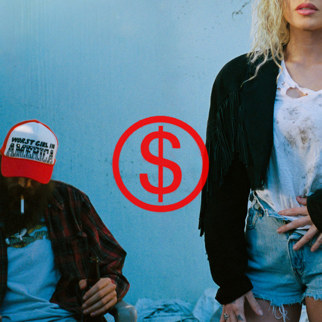
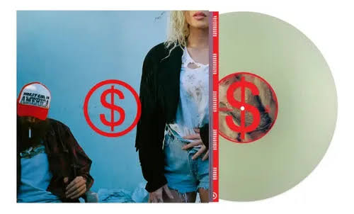
WOR$T GIRL IN AMERICA
Artista: Slayyyter
Gênero: Electropop e hyperpop
Indicado a: Melhor Álbum Dance/Eletrônico
Melhor Gravação Dance/Eletrônica — CRANK
Melhor Gravação Dance Pop — DANCE....
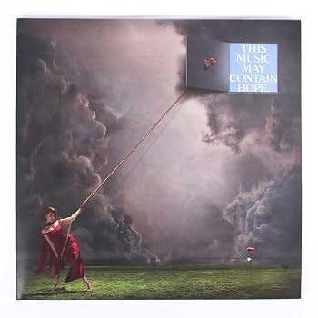
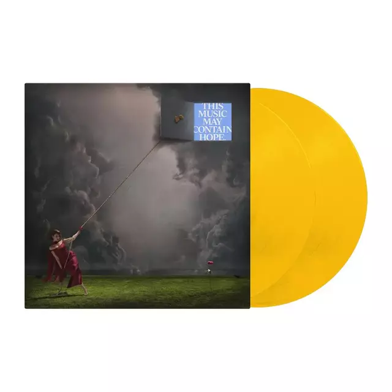
This Music May Contain Hope
Artista: Raye
Gênero: jazz, R&B e pop
Indicado a: Álbum do Ano
Melhor Álbum Vocal de Pop
Gravação do Ano — WHERE IS MY HUSBAND!
Canção do Ano — WHERE IS MY HUSBAND!
Melhor Performance Solo de Pop — WHERE IS MY HUSBAND!
Melhor Gravação Dance Pop — Life Boat.